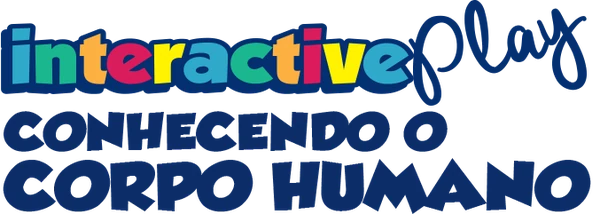
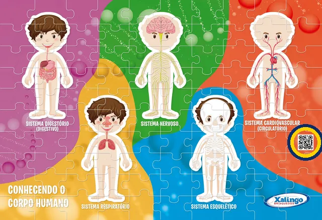

Conhecendo o Corpo Humano

STEAM Interactive Play · ref. 53309Monte o quebra-cabeça e escaneie o QR code que fica na parte laranja para liberar os 5 sistemas do corpo humano com narração, 3D e realidade aumentada.

Ajuda para pais e professores
Como funciona?
Depois de montar as 100 peças, escaneie o QR code com esta página. Ela libera os 5 sistemas do corpo com narração, legenda, modelos em 3D e realidade aumentada, além de um desafio de perguntas. O jogo da memória fica liberado para todos. Não precisa instalar nada.
A câmera não abre
Abra esta página no Safari (iPhone) ou no Chrome (Android), e não dentro do Instagram, WhatsApp ou Facebook. Quando o navegador perguntar, toque em Permitir. Se já bloqueou: no iPhone, vá em Ajustes › Safari › Câmera › Permitir; no Android, toque no cadeado ao lado do endereço › Permissões › Câmera. Se ainda assim não ler, use o botão Tirar foto do QR.
Não tem som
Aumente o volume do celular e confira se o botão 🔊 no alto da página está ligado. As narrações também aparecem escritas na tela, enquanto tocam.
Usar como aplicativo
No iPhone, toque em Compartilhar › Adicionar à Tela de Início. No Android, abra o menu ⋮ do Chrome › Adicionar à tela inicial. O ícone fica junto com seus apps.
Privacidade
A câmera é usada só para ler o QR code: nenhuma imagem sai do seu celular e não pedimos nenhum dado pessoal. A liberação fica salva só neste aparelho. Política de privacidade.
© Xalingo Brinquedos · STEAM Interactive Play · ref. 53309
versão 1.0 · 03/11/2026
Os sistemas do corpo
Escolha um sistema para ouvir, ver em 3D e colocar na sua mesa.
🔊 Sem som? Aumente o volume do celular. As narrações aparecem escritas enquanto tocam.
Jogo da memória
Vire as cartas e encontre os pares dos órgãos do corpo humano. Quanto menos cliques, mais pontos!